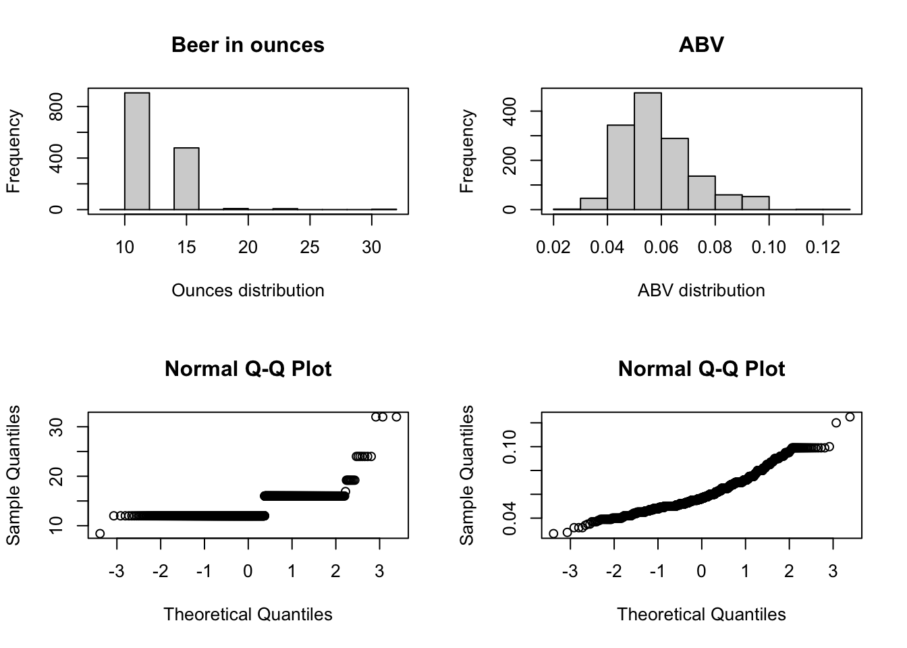

Beer Project
2023-10-04
#Hello CEO and CFO of Budweiser the purpose of this Exploritory Data Analysis was take the Beers and Breweries data sets and answer some statistical questions. Within this Code we have provided the graphs and results to answer the following question. How many breweries are in each stat? We addressed the missing values form the data sets. We determined the median ABV and IBU for each state along with the states that had the highest ABV and IBU. The distribution of ABV was determined and a statistical summary was performed. We determined a relationship between the ABV and IBU of the beers listed in the data sets through a scatter plot. Through a KNN model for determining nearest neighbors, we were able to determine the accuracy of whether a beer is an IPA or an Ales from a list of Ales based on the ABV and IBU. And last we were able to determine whether the was a statistical difference in the amount of ounces in a beer by looking at the ABV content of the beers. We hope that all of you question will be answered, but if not feel free to reach out to us for further explanation, thank you for your time.
library(class)
library(caret)## Loading required package: ggplot2## Loading required package: latticelibrary(e1071)
library(tidyverse)## ── Attaching core tidyverse packages ──────────────────────── tidyverse 2.0.0 ──
## ✔ dplyr 1.1.3 ✔ readr 2.1.4
## ✔ forcats 1.0.0 ✔ stringr 1.5.0
## ✔ lubridate 1.9.2 ✔ tibble 3.2.1
## ✔ purrr 1.0.2 ✔ tidyr 1.3.0## ── Conflicts ────────────────────────────────────────── tidyverse_conflicts() ──
## ✖ dplyr::filter() masks stats::filter()
## ✖ dplyr::lag() masks stats::lag()
## ✖ purrr::lift() masks caret::lift()
## ℹ Use the conflicted package (<http://conflicted.r-lib.org/>) to force all conflicts to become errorslibrary(e1071)
#The data sets are brought into R
df1 <-read.csv("/Users/ivanchavez/Library/CloudStorage/OneDrive-SouthernMethodistUniversity/DS- 6306 Doing DS/Beers.csv")
beer <- (df1)
df2 <- read.csv("/Users/ivanchavez/Library/CloudStorage/OneDrive-SouthernMethodistUniversity/DS- 6306 Doing DS/Breweries.csv")
breweries <- (df2)
#This was used to look at two data sets and compare them, seeing what their similarities are. Also what the column names are.
head(beer)## Name Beer_ID ABV IBU Brewery_id
## 1 Pub Beer 1436 0.050 NA 409
## 2 Devil's Cup 2265 0.066 NA 178
## 3 Rise of the Phoenix 2264 0.071 NA 178
## 4 Sinister 2263 0.090 NA 178
## 5 Sex and Candy 2262 0.075 NA 178
## 6 Black Exodus 2261 0.077 NA 178
## Style Ounces
## 1 American Pale Lager 12
## 2 American Pale Ale (APA) 12
## 3 American IPA 12
## 4 American Double / Imperial IPA 12
## 5 American IPA 12
## 6 Oatmeal Stout 12head(breweries)## Brew_ID Name City State
## 1 1 NorthGate Brewing Minneapolis MN
## 2 2 Against the Grain Brewery Louisville KY
## 3 3 Jack's Abby Craft Lagers Framingham MA
## 4 4 Mike Hess Brewing Company San Diego CA
## 5 5 Fort Point Beer Company San Francisco CA
## 6 6 COAST Brewing Company Charleston SCsummary(beer)## Name Beer_ID ABV IBU
## Length:2410 Min. : 1.0 Min. :0.00100 Min. : 4.00
## Class :character 1st Qu.: 808.2 1st Qu.:0.05000 1st Qu.: 21.00
## Mode :character Median :1453.5 Median :0.05600 Median : 35.00
## Mean :1431.1 Mean :0.05977 Mean : 42.71
## 3rd Qu.:2075.8 3rd Qu.:0.06700 3rd Qu.: 64.00
## Max. :2692.0 Max. :0.12800 Max. :138.00
## NA's :62 NA's :1005
## Brewery_id Style Ounces
## Min. : 1.0 Length:2410 Min. : 8.40
## 1st Qu.: 94.0 Class :character 1st Qu.:12.00
## Median :206.0 Mode :character Median :12.00
## Mean :232.7 Mean :13.59
## 3rd Qu.:367.0 3rd Qu.:16.00
## Max. :558.0 Max. :32.00
## summary(breweries)## Brew_ID Name City State
## Min. : 1.0 Length:558 Length:558 Length:558
## 1st Qu.:140.2 Class :character Class :character Class :character
## Median :279.5 Mode :character Mode :character Mode :character
## Mean :279.5
## 3rd Qu.:418.8
## Max. :558.0#The next three lines of code were to rename some of the columns because both data sets contained the same column name but different data within.
colnames(beer)[1] = "beer_name"
colnames(breweries)[2] = "brewery_name"
colnames(breweries)[1] = "Brewery_id"
#This line was used to merge the breweries data set into the beer data set. And the I look to make sure that they were merged correctly with the head and summary function
bb <- merge(beer, breweries)
head(bb)## Brewery_id beer_name Beer_ID ABV IBU
## 1 1 Get Together 2692 0.045 50
## 2 1 Maggie's Leap 2691 0.049 26
## 3 1 Wall's End 2690 0.048 19
## 4 1 Pumpion 2689 0.060 38
## 5 1 Stronghold 2688 0.060 25
## 6 1 Parapet ESB 2687 0.056 47
## Style Ounces brewery_name City
## 1 American IPA 16 NorthGate Brewing Minneapolis
## 2 Milk / Sweet Stout 16 NorthGate Brewing Minneapolis
## 3 English Brown Ale 16 NorthGate Brewing Minneapolis
## 4 Pumpkin Ale 16 NorthGate Brewing Minneapolis
## 5 American Porter 16 NorthGate Brewing Minneapolis
## 6 Extra Special / Strong Bitter (ESB) 16 NorthGate Brewing Minneapolis
## State
## 1 MN
## 2 MN
## 3 MN
## 4 MN
## 5 MN
## 6 MNsummary(bb)## Brewery_id beer_name Beer_ID ABV
## Min. : 1.0 Length:2410 Min. : 1.0 Min. :0.00100
## 1st Qu.: 94.0 Class :character 1st Qu.: 808.2 1st Qu.:0.05000
## Median :206.0 Mode :character Median :1453.5 Median :0.05600
## Mean :232.7 Mean :1431.1 Mean :0.05977
## 3rd Qu.:367.0 3rd Qu.:2075.8 3rd Qu.:0.06700
## Max. :558.0 Max. :2692.0 Max. :0.12800
## NA's :62
## IBU Style Ounces brewery_name
## Min. : 4.00 Length:2410 Min. : 8.40 Length:2410
## 1st Qu.: 21.00 Class :character 1st Qu.:12.00 Class :character
## Median : 35.00 Mode :character Median :12.00 Mode :character
## Mean : 42.71 Mean :13.59
## 3rd Qu.: 64.00 3rd Qu.:16.00
## Max. :138.00 Max. :32.00
## NA's :1005
## City State
## Length:2410 Length:2410
## Class :character Class :character
## Mode :character Mode :character
##
##
##
## #This table shows how many breweries are present in each state.
table(breweries$State)##
## AK AL AR AZ CA CO CT DC DE FL GA HI IA ID IL IN KS KY LA MA
## 7 3 2 11 39 47 8 1 2 15 7 4 5 5 18 22 3 4 5 23
## MD ME MI MN MO MS MT NC ND NE NH NJ NM NV NY OH OK OR PA RI
## 7 9 32 12 9 2 9 19 1 5 3 3 4 2 16 15 6 29 25 5
## SC SD TN TX UT VA VT WA WI WV WY
## 4 1 3 28 4 16 10 23 20 1 4breweries%>%count(State)## State n
## 1 AK 7
## 2 AL 3
## 3 AR 2
## 4 AZ 11
## 5 CA 39
## 6 CO 47
## 7 CT 8
## 8 DC 1
## 9 DE 2
## 10 FL 15
## 11 GA 7
## 12 HI 4
## 13 IA 5
## 14 ID 5
## 15 IL 18
## 16 IN 22
## 17 KS 3
## 18 KY 4
## 19 LA 5
## 20 MA 23
## 21 MD 7
## 22 ME 9
## 23 MI 32
## 24 MN 12
## 25 MO 9
## 26 MS 2
## 27 MT 9
## 28 NC 19
## 29 ND 1
## 30 NE 5
## 31 NH 3
## 32 NJ 3
## 33 NM 4
## 34 NV 2
## 35 NY 16
## 36 OH 15
## 37 OK 6
## 38 OR 29
## 39 PA 25
## 40 RI 5
## 41 SC 4
## 42 SD 1
## 43 TN 3
## 44 TX 28
## 45 UT 4
## 46 VA 16
## 47 VT 10
## 48 WA 23
## 49 WI 20
## 50 WV 1
## 51 WY 4breweries %>% ggplot(aes(x = State)) + geom_bar() + scale_x_discrete(guide = guide_axis(angle = 90))#This was used to determine what columns contained the NAs. It appears that the NAs are missing at random and are not tied to any other variable. Becasue of this we removed them from the data sets.
sum(is.na(bb$Brewery_id))## [1] 0sum(is.na(bb$beer_name))## [1] 0sum(is.na(bb$Beer_ID))## [1] 0sum(is.na(bb$ABV))## [1] 62sum(is.na(bb$IBU))## [1] 1005sum(is.na(bb$Style))## [1] 0sum(is.na(bb$Ounces))## [1] 0sum(is.na(bb$brewery_name))## [1] 0sum(is.na(bb$City))## [1] 0sum(is.na(bb$State))## [1] 0bb %>% group_by(State) %>% summarise_at(vars(ABV), list(name = mean))## # A tibble: 51 × 2
## State name
## <chr> <dbl>
## 1 " AK" 0.0556
## 2 " AL" 0.062
## 3 " AR" 0.052
## 4 " AZ" NA
## 5 " CA" NA
## 6 " CO" NA
## 7 " CT" 0.0611
## 8 " DC" 0.0656
## 9 " DE" NA
## 10 " FL" NA
## # ℹ 41 more rowsbb %>% group_by(State) %>% summarise_at(vars(IBU), list(name = mean))## # A tibble: 51 × 2
## State name
## <chr> <dbl>
## 1 " AK" NA
## 2 " AL" NA
## 3 " AR" NA
## 4 " AZ" NA
## 5 " CA" NA
## 6 " CO" NA
## 7 " CT" NA
## 8 " DC" NA
## 9 " DE" NA
## 10 " FL" NA
## # ℹ 41 more rows#Here the NAs from the data set were removed, and it was determine that they were random.
bb2<- na.omit(bb)
#Here the two groups of IBU and ABV were summarized and then plotted by the median.
bb2 %>% group_by(State) %>% summarise_at(vars(ABV), list(name = median))## # A tibble: 50 × 2
## State name
## <chr> <dbl>
## 1 " AK" 0.057
## 2 " AL" 0.06
## 3 " AR" 0.04
## 4 " AZ" 0.0575
## 5 " CA" 0.058
## 6 " CO" 0.065
## 7 " CT" 0.061
## 8 " DC" 0.059
## 9 " DE" 0.055
## 10 " FL" 0.062
## # ℹ 40 more rowsbb2 %>% group_by(State) %>% summarise_at(vars(IBU), list(name = median))## # A tibble: 50 × 2
## State name
## <chr> <dbl>
## 1 " AK" 46
## 2 " AL" 43
## 3 " AR" 39
## 4 " AZ" 20.5
## 5 " CA" 42
## 6 " CO" 40
## 7 " CT" 29
## 8 " DC" 47.5
## 9 " DE" 52
## 10 " FL" 55
## # ℹ 40 more rowsbb2 %>% group_by(State) %>% summarise_at(vars(ABV), list(name = median)) %>% ggplot(aes(x = State, y=name, colour = State )) + geom_point() + scale_x_discrete(guide = guide_axis(angle = 90))bb2 %>% group_by(State) %>% summarise_at(vars(IBU), list(name = median)) %>% ggplot(aes(x = State, y=name, colour = State )) + geom_point() + scale_x_discrete(guide = guide_axis(angle = 90))#These two plots are of the median values of the ABV and IBU by state
bb2%>% ggplot(aes(x = State, y = ABV, colours = State )) + stat_summary(fun = "median", geom = "bar")+ scale_x_discrete(guide = guide_axis(angle = 90)) + labs(title = "Median ABV by State")bb2%>% ggplot(aes(x = State, y = IBU, colours = State )) + stat_summary(fun = "median", geom = "bar")+ scale_x_discrete(guide = guide_axis(angle = 90))+ labs(title = "Median IBU by State")#The maximum value of ABV and IBU were determined by this code.
max_value1 <- max(bb2$ABV)
which(bb2$ABV == max_value1)## [1] 8bb2[8, ]## Brewery_id beer_name Beer_ID ABV IBU Style Ounces
## 8 2 London Balling 2685 0.125 80 English Barleywine 16
## brewery_name City State
## 8 Against the Grain Brewery Louisville KYmax_value2 <- max(bb2$IBU)
which(bb2$IBU == max_value2)## [1] 1134bb2[1134, ]## Brewery_id beer_name Beer_ID ABV IBU
## 1857 375 Bitter Bitch Imperial IPA 980 0.082 138
## Style Ounces brewery_name City
## 1857 American Double / Imperial IPA 12 Astoria Brewing Company Astoria
## State
## 1857 ORsummary(bb2$ABV)## Min. 1st Qu. Median Mean 3rd Qu. Max.
## 0.02700 0.05000 0.05700 0.05991 0.06800 0.12500#This Box plot of the distribution of ABV with a red line to represent the mean of 0.05991.
ggplot(bb2, aes(y = ABV)) + geom_boxplot(fill = "grey", color = "black", alpha = 0.7) + labs(title = "ABV Summary", y = "ABV") + geom_hline(yintercept = 0.05991, linetype = "dashed", color = "red") + theme_minimal() #This bar graph is of the distribution of ABV with a red line to represent the median
ggplot(bb2, aes(x= ABV)) + geom_bar() + geom_vline(xintercept = 0.057, linetype = "dashed", color = "red") + labs(title = "Distribution of ABV")
summary(bb2$ABV)## Min. 1st Qu. Median Mean 3rd Qu. Max.
## 0.02700 0.05000 0.05700 0.05991 0.06800 0.12500summary(bb2$Style)## Length Class Mode
## 1405 character charactersum(grepl(" Ale", bb2$Style, ignore.case = TRUE))## [1] 559#KNN Model.
#The data set was filtered into just the Ale and IPA beers. A new column was created that if the Style column contained IPA then it would out a 1 in the new IsIPA column. This allowed the confusion matrix to compare the IPAs to the Ales.
set.seed(1)
target <- c(" Ale", "IPA") %>% paste(collapse = "|")
bb3 <- bb2 %>% filter(str_detect(Style, target))
bb3$IsIPA <- as.numeric(grepl(" IPA", bb3$Style, ignore.case = TRUE))
splitPerc = .7
trainIndices = sample(1:dim(bb3)[1],round(splitPerc * dim(bb3)[1]))
train = bb3[trainIndices,]
test = bb3[-trainIndices,]
head(test)## Brewery_id beer_name Beer_ID ABV IBU Style Ounces
## 2 1 Wall's End 2690 0.048 19 English Brown Ale 16
## 10 2 Pile of Face 2675 0.060 65 American IPA 16
## 14 4 Jucundus 2666 0.060 24 Wheat Ale 16
## 18 5 Westfalia 2660 0.056 16 American Amber / Red Ale 12
## 21 12 Mind's Eye PA 1402 0.067 74 American IPA 16
## 23 13 51K IPA 1481 0.070 51 American IPA 12
## brewery_name City State IsIPA
## 2 NorthGate Brewing Minneapolis MN 0
## 10 Against the Grain Brewery Louisville KY 1
## 14 Mike Hess Brewing Company San Diego CA 0
## 18 Fort Point Beer Company San Francisco CA 0
## 21 Petoskey Brewing Petoskey MI 1
## 23 Blackrocks Brewery Marquette MI 1head(train)## Brewery_id beer_name Beer_ID ABV IBU
## 836 442 Rustic Red 1268 0.052 23
## 679 330 Bronx Summer Pale Ale 1748 0.052 16
## 129 52 Ferus Fluxus Wild Belgian Pale Ale 1853 0.075 30
## 930 524 This Season's Blonde 597 0.056 27
## 509 222 Wavemaker 2095 0.058 38
## 471 200 Worthy Pale 1511 0.060 50
## Style Ounces brewery_name City
## 836 Irish Red Ale 16.0 Pateros Creek Brewing Company Fort Collins
## 679 American Pale Ale (APA) 16.0 The Bronx Brewery Bronx
## 129 American Wild Ale 19.2 Upslope Brewing Company Boulder
## 930 American Blonde Ale 12.0 Aspen Brewing Company Aspen
## 509 American Amber / Red Ale 12.0 Big Storm Brewing Company Odessa
## 471 American Pale Ale (APA) 12.0 Worthy Brewing Company Bend
## State IsIPA
## 836 CO 0
## 679 NY 0
## 129 CO 0
## 930 CO 0
## 509 FL 0
## 471 OR 0summary(test)## Brewery_id beer_name Beer_ID ABV
## Min. : 1.0 Length:283 Min. : 5 Min. :0.03700
## 1st Qu.: 92.0 Class :character 1st Qu.: 801 1st Qu.:0.05200
## Median :193.0 Mode :character Median :1389 Median :0.06000
## Mean :225.7 Mean :1391 Mean :0.06119
## 3rd Qu.:342.5 3rd Qu.:2004 3rd Qu.:0.06900
## Max. :531.0 Max. :2690 Max. :0.09900
## IBU Style Ounces brewery_name
## Min. : 4.00 Length:283 Min. :12.00 Length:283
## 1st Qu.: 25.50 Class :character 1st Qu.:12.00 Class :character
## Median : 46.00 Mode :character Median :12.00 Mode :character
## Mean : 49.58 Mean :13.44
## 3rd Qu.: 69.00 3rd Qu.:16.00
## Max. :138.00 Max. :24.00
## City State IsIPA
## Length:283 Length:283 Min. :0.0000
## Class :character Class :character 1st Qu.:0.0000
## Mode :character Mode :character Median :0.0000
## Mean :0.3922
## 3rd Qu.:1.0000
## Max. :1.0000summary(train)## Brewery_id beer_name Beer_ID ABV
## Min. : 1.0 Length:661 Min. : 1 Min. :0.03500
## 1st Qu.:106.0 Class :character 1st Qu.: 786 1st Qu.:0.05200
## Median :204.0 Mode :character Median :1504 Median :0.06000
## Mean :226.7 Mean :1430 Mean :0.06203
## 3rd Qu.:346.0 3rd Qu.:2085 3rd Qu.:0.07000
## Max. :547.0 Max. :2692 Max. :0.09900
## IBU Style Ounces brewery_name
## Min. : 4.00 Length:661 Min. :12.00 Length:661
## 1st Qu.: 28.00 Class :character 1st Qu.:12.00 Class :character
## Median : 45.00 Mode :character Median :12.00 Mode :character
## Mean : 50.11 Mean :13.54
## 3rd Qu.: 70.00 3rd Qu.:16.00
## Max. :135.00 Max. :32.00
## City State IsIPA
## Length:661 Length:661 Min. :0.0000
## Class :character Class :character 1st Qu.:0.0000
## Mode :character Mode :character Median :0.0000
## Mean :0.4145
## 3rd Qu.:1.0000
## Max. :1.0000iterations = 5
numks = 50
splitPerc = .7
masterAcc = matrix(nrow = iterations, ncol = numks)
#This loop is used to determine which K value has the highest accuracy then its plotted. It went through this loop 50 times.
for(j in 1:iterations)
{
set.seed(5)
trainIndices = sample(1:dim(bb3)[1],round(splitPerc * dim(bb3)[1]))
train = bb3[trainIndices,]
test = bb3[-trainIndices,]
for(i in 1:numks)
{
classifications = knn(train[, c("IBU", "ABV")], test[, c("IBU", "ABV")], train$IsIPA, k = i)
table(classifications, test$IsIPA)
CM = confusionMatrix(table(classifications, test$IsIPA))
masterAcc[j,i] = CM$overall[1]
}
}
MeanAcc = colMeans(masterAcc)
plot(seq(1,numks,1),MeanAcc, type = "l", main = "Mean Accuracy vs K value", xlab = "K value")#This is looking at the different k values and comparing them. The graph from above was used to determine which to look at. 9 was the highest accuracy on the graph and we wanted to know what that value was. We also look at the k = 3 and k = 5 to compare to the k = 9.
set.seed(5)
target <- c(" Ale", "IPA") %>% paste(collapse = "|")
bb3 <- bb2 %>% filter(str_detect(Style, target))
bb3$IsIPA <- as.numeric(grepl(" IPA", bb3$Style, ignore.case = TRUE))
splitPerc = .7
trainIndices = sample(1:dim(bb3)[1],round(splitPerc * dim(bb3)[1]))
train = bb3[trainIndices,]
test = bb3[-trainIndices,]
knn_model1 <- knn(train[, c("IBU", "ABV")], test[, c("IBU", "ABV")], train$IsIPA, k = 3)
confusion_matrix1 <- table(knn_model1, test$IsIPA)
confusionMatrix(knn_model1, as.factor(test$IsIPA))## Confusion Matrix and Statistics
##
## Reference
## Prediction 0 1
## 0 153 18
## 1 18 94
##
## Accuracy : 0.8728
## 95% CI : (0.8283, 0.9093)
## No Information Rate : 0.6042
## P-Value [Acc > NIR] : <2e-16
##
## Kappa : 0.734
##
## Mcnemar's Test P-Value : 1
##
## Sensitivity : 0.8947
## Specificity : 0.8393
## Pos Pred Value : 0.8947
## Neg Pred Value : 0.8393
## Prevalence : 0.6042
## Detection Rate : 0.5406
## Detection Prevalence : 0.6042
## Balanced Accuracy : 0.8670
##
## 'Positive' Class : 0
## knn_model2 <- knn(train[, c("IBU", "ABV")], test[, c("IBU", "ABV")], train$IsIPA, k = 5)
confusion_matrix2 <- table(knn_model2, test$IsIPA)
confusionMatrix(knn_model2, as.factor(test$IsIPA))## Confusion Matrix and Statistics
##
## Reference
## Prediction 0 1
## 0 155 15
## 1 16 97
##
## Accuracy : 0.8905
## 95% CI : (0.8481, 0.9243)
## No Information Rate : 0.6042
## P-Value [Acc > NIR] : <2e-16
##
## Kappa : 0.7713
##
## Mcnemar's Test P-Value : 1
##
## Sensitivity : 0.9064
## Specificity : 0.8661
## Pos Pred Value : 0.9118
## Neg Pred Value : 0.8584
## Prevalence : 0.6042
## Detection Rate : 0.5477
## Detection Prevalence : 0.6007
## Balanced Accuracy : 0.8863
##
## 'Positive' Class : 0
## knn_model3 <- knn(train[, c("IBU", "ABV")], test[, c("IBU", "ABV")], train$IsIPA, k = 9)
confusion_matrix3 <- table(knn_model3, test$IsIPA)
confusionMatrix(knn_model3, as.factor(test$IsIPA))## Confusion Matrix and Statistics
##
## Reference
## Prediction 0 1
## 0 157 17
## 1 14 95
##
## Accuracy : 0.8905
## 95% CI : (0.8481, 0.9243)
## No Information Rate : 0.6042
## P-Value [Acc > NIR] : <2e-16
##
## Kappa : 0.7699
##
## Mcnemar's Test P-Value : 0.7194
##
## Sensitivity : 0.9181
## Specificity : 0.8482
## Pos Pred Value : 0.9023
## Neg Pred Value : 0.8716
## Prevalence : 0.6042
## Detection Rate : 0.5548
## Detection Prevalence : 0.6148
## Balanced Accuracy : 0.8832
##
## 'Positive' Class : 0
## # max individual abv values and top 3 states with highest abv values, and the highest abv value was london balling
max_value1 <- max(bb2$ABV)
which(bb2$ABV == max_value1)## [1] 8bb2[8, ]## Brewery_id beer_name Beer_ID ABV IBU Style Ounces
## 8 2 London Balling 2685 0.125 80 English Barleywine 16
## brewery_name City State
## 8 Against the Grain Brewery Louisville KYtopABV <- order(bb2$ABV, decreasing = TRUE)[1:3]
topABV## [1] 8 57 182bb2[57,]## Brewery_id beer_name Beer_ID ABV IBU Style Ounces
## 144 18 Csar 2621 0.12 90 Russian Imperial Stout 16
## brewery_name City State
## 144 Tin Man Brewing Company Evansville INbb2[182,]## Brewery_id beer_name Beer_ID ABV IBU Style Ounces
## 336 47 4Beans 2574 0.1 52 Baltic Porter 12
## brewery_name City State
## 336 Sixpoint Craft Ales Brooklyn NYlibrary(dplyr)
# Calculate the average ABV by state
median_abv_by_state <- bb2 %>%
group_by(State) %>%
summarize(median_ABV = median(ABV, na.rm = TRUE)) %>%
arrange(desc(median_ABV))
median_abv_by_state## # A tibble: 50 × 2
## State median_ABV
## <chr> <dbl>
## 1 " ME" 0.067
## 2 " CO" 0.065
## 3 " OK" 0.063
## 4 " FL" 0.062
## 5 " GA" 0.062
## 6 " WV" 0.062
## 7 " CT" 0.061
## 8 " NC" 0.061
## 9 " NM" 0.061
## 10 " AL" 0.06
## # ℹ 40 more rows# Find the top 3 states with the highest average ABV
top_3_states <- head(median_abv_by_state, n = 3)
# Print the top 3 states with the highest average ABV
print(top_3_states)## # A tibble: 3 × 2
## State median_ABV
## <chr> <dbl>
## 1 " ME" 0.067
## 2 " CO" 0.065
## 3 " OK" 0.063#finding the highest ibu values, and the highest IBU value was bitter bitch imperial
head(bb2)## Brewery_id beer_name Beer_ID ABV IBU
## 1 1 Get Together 2692 0.045 50
## 2 1 Maggie's Leap 2691 0.049 26
## 3 1 Wall's End 2690 0.048 19
## 4 1 Pumpion 2689 0.060 38
## 5 1 Stronghold 2688 0.060 25
## 6 1 Parapet ESB 2687 0.056 47
## Style Ounces brewery_name City
## 1 American IPA 16 NorthGate Brewing Minneapolis
## 2 Milk / Sweet Stout 16 NorthGate Brewing Minneapolis
## 3 English Brown Ale 16 NorthGate Brewing Minneapolis
## 4 Pumpkin Ale 16 NorthGate Brewing Minneapolis
## 5 American Porter 16 NorthGate Brewing Minneapolis
## 6 Extra Special / Strong Bitter (ESB) 16 NorthGate Brewing Minneapolis
## State
## 1 MN
## 2 MN
## 3 MN
## 4 MN
## 5 MN
## 6 MNmax_value2 <- max(bb2$IBU)
which(bb2$IBU == max_value2)## [1] 1134bb2[1134, ]## Brewery_id beer_name Beer_ID ABV IBU
## 1857 375 Bitter Bitch Imperial IPA 980 0.082 138
## Style Ounces brewery_name City
## 1857 American Double / Imperial IPA 12 Astoria Brewing Company Astoria
## State
## 1857 ORtopIBU <- order(bb2$IBU, decreasing = TRUE)[1:3]
topIBU## [1] 1134 1044 788bb2[1044,]## Brewery_id beer_name Beer_ID ABV IBU Style Ounces
## 1719 345 Troopers Alley IPA 1676 0.059 135 American IPA 12
## brewery_name City State
## 1719 Wolf Hills Brewing Company Abingdon VAbb2[788,]## Brewery_id beer_name Beer_ID ABV IBU Style
## 1305 231 Dead-Eye DIPA 2067 0.09 130 American Double / Imperial IPA
## Ounces brewery_name City State
## 1305 16 Cape Ann Brewing Company Gloucester MA# Calculate the average ibu by state
median_ibu_by_state <- bb2 %>%
group_by(State) %>%
summarize(median_IBU = median(IBU, na.rm = TRUE)) %>%
arrange(desc(median_IBU))
median_ibu_by_state## # A tibble: 50 × 2
## State median_IBU
## <chr> <dbl>
## 1 " ME" 61
## 2 " WV" 57.5
## 3 " FL" 55
## 4 " GA" 55
## 5 " DE" 52
## 6 " NM" 51
## 7 " NH" 48.5
## 8 " DC" 47.5
## 9 " NY" 47
## 10 " AK" 46
## # ℹ 40 more rows# Find the top 3 states with the highest average ibu
top_3_states_ibu <- head(median_ibu_by_state, n = 3)
# Print the top 3 states with the highest average ibu
print(top_3_states_ibu)## # A tibble: 3 × 2
## State median_IBU
## <chr> <dbl>
## 1 " ME" 61
## 2 " WV" 57.5
## 3 " FL" 55summary(bb2$ABV)## Min. 1st Qu. Median Mean 3rd Qu. Max.
## 0.02700 0.05000 0.05700 0.05991 0.06800 0.12500# Create a scatterplot of ABV vs. IBU
bb2 %>% ggplot(aes(x = ABV, y = IBU)) +
geom_point() + geom_smooth(method = "loess") + geom_smooth(method = "lm", color = "red") +
labs(x = "ABV", y = "IBU", title = "Scatterplot of ABV vs. IBU")## `geom_smooth()` using formula = 'y ~ x'
## `geom_smooth()` using formula = 'y ~ x'bb2 %>% ggplot(aes(x = ABV, y = IBU)) + geom_point(position = "jitter")#begin of looking into question 9
# printing our the distributions for the ABV compared to the ounces in beers
par(mfrow=c(2,2))
hist(bb2$Ounces, xlab='Ounces distribution', main='Beer in ounces')
box()
hist(bb2$ABV, xlab='ABV distribution', main='ABV')
box()
qqnorm(bb2$Ounces)
qqnorm(bb2$ABV)
unique_values <- length(unique(bb2$Ounces))
unique_values## [1] 7#printing out the bar graphs for the distribution counts for beers by ounces
bb2 %>% ggplot(aes(x = Ounces)) + geom_bar() + scale_x_discrete(guide = guide_axis(angle = 90))#filtered out the other ounces value and only kept 12 and 16 because all of the other
#ones didn't have a significant amount of values. Also performed a log transformation on the ounces data to get a more normally distributed results.
bb2$ABV = log(bb2$ABV)
bb2_revised <- bb2 %>% filter(Ounces == "12" | Ounces == "16")
#Setting the Ounces as a factor so we can later plot the values in our ggplots
bb2_revised$Ounces <- as.factor(bb2_revised$Ounces)
#plot of the 12oz and 16oz beers count
bb2_revised %>% ggplot(aes(x = Ounces)) + geom_bar() + scale_x_discrete(guide = guide_axis(angle = 90))#running a t-test for the ABV compared to 12 and 16 ounce beers
#This shows that there is significant difference between the 12oz & 16oz beers ABV levels
t.test(ABV~Ounces, data = bb2_revised, var.equal = TRUE)##
## Two Sample t-test
##
## data: ABV by Ounces
## t = -4.2563, df = 1383, p-value = 2.218e-05
## alternative hypothesis: true difference in means between group 12 and group 16 is not equal to 0
## 95 percent confidence interval:
## -0.07479922 -0.02760333
## sample estimates:
## mean in group 12 mean in group 16
## -2.857744 -2.806543#plot of the log transformed distribution of the ABV values
bb2_revised %>% ggplot(aes(x = ABV)) + geom_bar() + scale_x_discrete(guide = guide_axis(angle = 90))#Plot of the log transformed median ABV value by ounces
bb2_revised%>% ggplot(aes(x = Ounces, y = ABV, colours = Ounces )) + stat_summary(fun = "median", geom = "bar")+
scale_x_discrete(guide = guide_axis(angle = 90)) + labs(title = "Median ABV by beer oz")#Boxplot of the ABV compared to ounces
boxplot(ABV~Ounces, data = bb2_revised)
#density plot of the ABV after the log transformations of 12oz and 16oz beers
bb2_revised %>%
ggplot(aes(x = ABV, after_stat(density), color = Ounces, fill = Ounces)) +
geom_freqpoly() +
ggtitle("Density Plot of ABV distribution comparing 12 & 16oz beers")## `stat_bin()` using `bins = 30`. Pick better value with `binwidth`.#conclusion
#we see after the log transformation of the ABV data and running the t.test
#that there is significant evidence to prove that these values are different. Since
#we are not sure of the randomness of this data we are only able to extend the inference
#of our t.test to the data that from the data sets.When looking at the plot for the abv compared to #ibu it visually shows a positive relationship between the values.
#Through our research we found that the beer with the highest ABV is London Balling in KY, and the beer with the highest IBU is Bitter Bitch Imperial from OR.
#There does appear to be a positive relationship between the ABV and IBU values.
#Based off beers IBUs and ABVs we can predict with a 89.05% accuracy whether a beer is a IPA from a list of ales.
#Based off this data set we found that there is a statistically significant difference in the ABV levels between 12oz and 16oz beers.